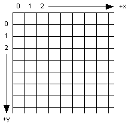

24.2 Grundlagen der Grafikausgabe
Um die Grafikfähigkeiten von Java nutzen zu können, muss
das Paket java.awt
eingebunden werden. Dies geschieht zweckmäßigerweise mit
Hilfe folgender Anweisung am Anfang der Klassendefinition:
Danach stehen alle Klassen aus dem Paket java.awt
zur Verfügung.
Zur Ausgabe von grafischen Elementen benötigt die Anwendung ein
Fenster, auf das die Ausgabeoperationen angewendet werden können.
Während bei der Programmierung eines Applets ein Standardfenster
automatisch zur Verfügung gestellt wird, muss eine Applikation
ihre Fenster selbst erzeugen. Da die Kommunikation mit einem Fenster
über eine Reihe von Callback-Methoden abgewickelt wird, wird
eine Fensterklasse in der Regel nicht einfach instanziert. Stattdessen
ist es meist erforderlich, eine eigene Klasse aus einer der vorhandenen
abzuleiten und die benötigten Interfaces zu implementieren.
Zum Ableiten einer eigenen Fensterklasse wird in der Regel entweder
die Klasse Frame
oder die Klasse Dialog
verwendet, die beide aus Window
abgeleitet sind. Da Dialog
vorwiegend dafür verwendet wird, Dialogboxen zu erstellen, die
über darin enthaltene Komponenten mit dem Anwender kommunizieren,
wollen wir ihre Verwendung bis zum Kapitel 31
zurückstellen. Die wichtigste Klasse zur Ausgabe von Grafiken
in Java-Applikationen ist also Frame.
Um ein einfaches Fenster zu erzeugen und auf dem Bildschirm anzuzeigen,
muss ein neues Element der Klasse Frame
erzeugt, auf die gewünschte Größe gebracht und durch
Aufruf der Methode setVisible
sichtbar gemacht werden:
001 /* Listing2401.java */
002
003 import java.awt.*;
004
005 class Listing2401
006 {
007 public static void main(String[] args)
008 {
009 Frame wnd = new Frame("Einfaches Fenster");
010
011 wnd.setSize(400,300);
012 wnd.setVisible(true);
013 }
014 }
|
Listing2401.java |
Listing 24.1: Ein einfaches Fenster erzeugen
Das Ausführen dieses Programms führt dazu, dass ein Fenster
mit dem Titel »Einfaches Fenster« erzeugt und in der Größe
400*300 Pixel auf dem Bildschirm angezeigt wird.
24.2.2 Die Methode paint
Die Ausgabe in ein Fenster erfolgt durch Überlagern der Methode
paint,
die immer dann automatisch aufgerufen wird, wenn das Fenster ganz
oder teilweise neu gezeichnet werden muss. Dies ist beispielsweise
dann der Fall, wenn das Fenster zum ersten Mal angezeigt wird oder
durch Benutzeraktionen ein Teil des Fensters sichtbar wird, der bisher
verdeckt war. paint
bekommt beim Aufruf eine Instanz der Klasse Graphics
übergeben:
Graphics
ist Javas Implementierung eines Device-Kontexts
(auch Grafikkontext genannt) und stellt
somit die Abstraktion eines universellen Ausgabegeräts für
Grafik und Schrift dar. Die Klasse bietet Methoden zur Erzeugung von
Linien-, Füll- und Textelementen. Darüber hinaus verwaltet
Graphics
die Zeichenfarbe, in der alle Ausgaben erfolgen, und einen Font, der
zur Ausgabe von Schrift verwendet wird. Ein Device-Kontext kann daher
als eine Art universelles Ausgabegerät angesehen werden, das
elementare Funktionen zur Ausgabe von farbigen Grafik- und Schriftzeichen
zur Verfügung stellt.
24.2.3 Das grafische Koordinatensystem
Die Ausgabe von Grafik basiert auf einem zweidimensionalen Koordinatensystem,
dessen Ursprungspunkt (0,0) in der linken oberen Ecke liegt (siehe
Abbildung 24.1).
Positive x-Werte erstrecken sich nach rechts, positive y-Werte
nach unten. Die Maßeinheit entspricht einem Bildschirmpixel
und ist damit geräteabhängig.
In den meisten Fällen steht dem Programm nicht das gesamte Fenster
zur Ausgabe zur Verfügung, sondern es gibt Randelemente
wie Titelzeilen, Menüs oder Rahmen, die nicht überschrieben
werden können. Mit der Methode getInsets
kann die Größe dieser Randelemente ermittelt werden. Wir
werden darauf in Kapitel 25
noch einmal zurückkommen.

Abbildung 24.1: Das Koordinatensystem von Java
Ein einfaches Hauptfenster, wie es im vorigen Beispiel gezeigt wurde,
besitzt keinerlei Funktionalität, um vom Anwender auf geordnete
Weise geschlossen werden zu können. Alle entsprechenden Dialogelemente
im Systemmenü sind ohne Funktion. Tatsächlich mussten wir
das Programm durch Drücken von [STRG]+[C]
abbrechen. Ohne zu tief in Details einzusteigen (diese werden in Kapitel 28
und Kapitel 29 nachgereicht),
wollen wir an dieser Stelle beispielhaft einen geeigneten Mechanismus
zum Schließen des Hauptfensters vorstellen.
Soll der Anwender ein Hauptfenster schließen können, muss
ein WindowListener
registriert werden. Dabei handelt es sich um ein Interface, dessen
Methode windowClosing
aufgerufen wird, wenn der Anwender über das Systemmenü oder
den Schließen-Button das Fenster schließen will. Das Programm
wird in diesem Fall setVisible(false)
aufrufen, um das Fenster zu schließen, und nötigenfalls
System.exit anhängen, um
zusätzlich das Programm zu beenden.
Da ein solcher WindowListener
in praktisch jedem GUI-Programm benötigt wird, wollen wir eine
Klasse WindowClosingAdapter
vorstellen, die in allen folgenden Beispielen wiederverwendet werden
kann:
001 /* WindowClosingAdapter.java */
002
003 import java.awt.event.*;
004
005 public class WindowClosingAdapter
006 extends WindowAdapter
007 {
008 private boolean exitSystem;
009
010 /**
011 * Erzeugt einen WindowClosingAdapter zum Schliessen
012 * des Fensters. Ist exitSystem true, wird das komplette
013 * Programm beendet.
014 */
015 public WindowClosingAdapter(boolean exitSystem)
016 {
017 this.exitSystem = exitSystem;
018 }
019
020 /**
021 * Erzeugt einen WindowClosingAdapter zum Schliessen
022 * des Fensters. Das Programm wird nicht beendet.
023 */
024 public WindowClosingAdapter()
025 {
026 this(false);
027 }
028
029 public void windowClosing(WindowEvent event)
030 {
031 event.getWindow().setVisible(false);
032 event.getWindow().dispose();
033 if (exitSystem) {
034 System.exit(0);
035 }
036 }
037 }
|
WindowClosingAdapter.java |
Listing 24.2: Die Klasse WindowClosingAdapter
Um den gewünschten Effekt zu erzielen, muss der Listener beim
zu schließenden Fenster durch Aufruf von addWindowListener
registriert werden. Dadurch wird beim Anklicken des Schließen-Buttons
(bzw. beim Aufrufen des entsprechenden Systemmenüeintrags) die
Methode windowClosing
aufgerufen und das Fenster geschlossen. Falls true
an den Konstruktor übergeben wurde, beendet der Listener das
gesamte Programm.
Damit kann Listing 24.1
wie folgt verbessert werden:
001 /* Listing2403.java */
002
003 import java.awt.*;
004
005 class Listing2403
006 {
007 public static void main(String[] args)
008 {
009 Frame wnd = new Frame("Fenster schließen");
010 wnd.addWindowListener(new WindowClosingAdapter(true));
011 wnd.setSize(400,300);
012 wnd.setVisible(true);
013 }
014 }
|
Listing2403.java |
Listing 24.3: Das Schließen des Fensters ermöglichen